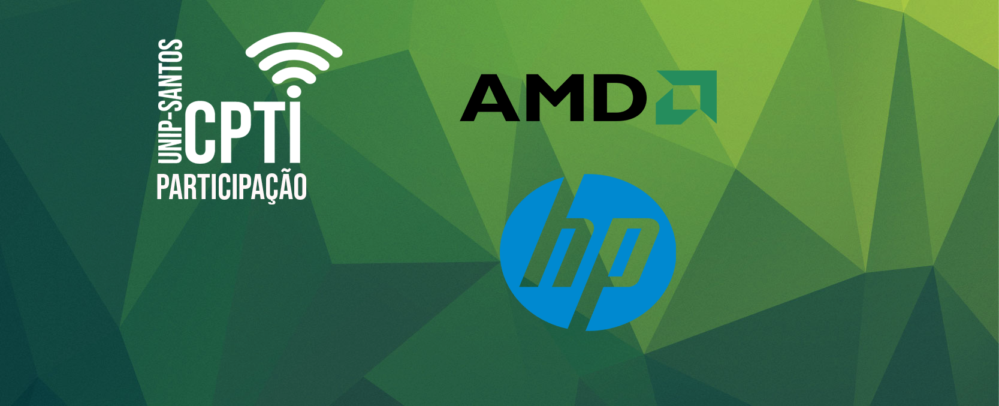
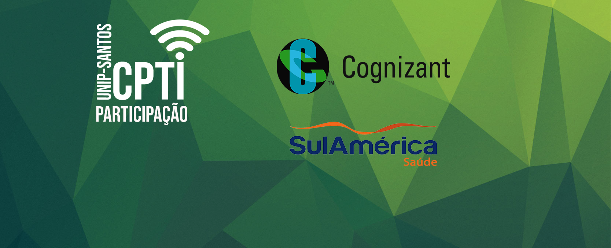
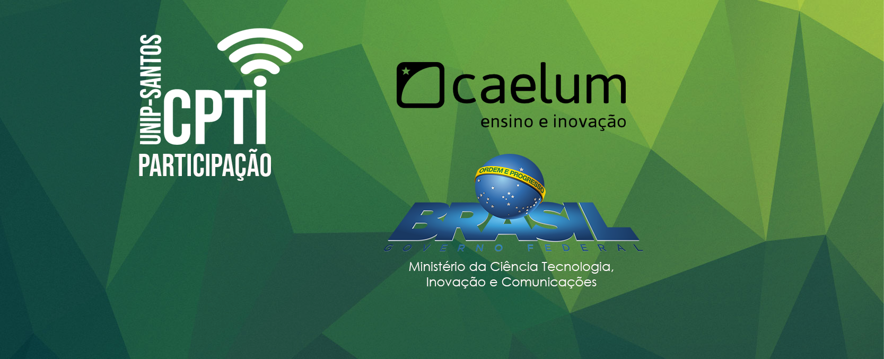
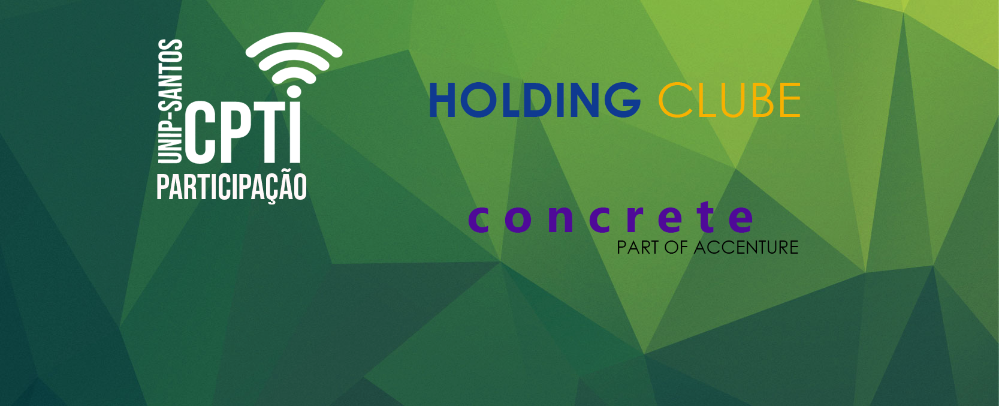

16/OUT/2018 (2ta Feira) 10:00h
Abertura de Evento
16/OUT/2018 (2ta Feira) 19:15h
“Cibersegurança e dispositivos conectados – tudo está vulnerável”
Cada vez mais, tudo o que tocamos está conectado: desde aparelhos tecnológicos até objetos que muita gente ainda pensa que são analógicos. Se, por um lado, isso traz inovações que deixam nossa vida mais fácil e simples, essa inter-conectividade também é atraente para quem pratica ciber-ataques. Se tudo está conectado, tudo está vulnerável. Não é à toa que os ciber-ataques aumentaram em 400% ao redor do mundo no último ano.
17/OUT/2018 (3ça Feira) 19:15h
Prata da casa
Indra Nimbi Holding Clube
17/OUT/2018 (3ça Feira) 19:30h
O Futuro do trabalho
Você está preparado para o futuro? Está familiarizado com tudo que está acontecendo nesta incrível Era de transformação que estamos vivendo? Inteligência artificial, robotização, blockchain, realidade virtual, carros voadores e autônomos e conectividade, com energia e tecnologia bem mais baratas do que antes? Tudo isso criando um ambiente propício para mudar tudo o que conhecemos, logo o trabalho também irá mudar. Neste bate papo, vamos abordar as transformações que estamos vivendo no trabalho e o que podemos esperar do futuro, do emprego e das profissões